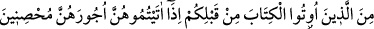

nelerin helâl kılındığını soruyorlar”, yani dünyâ ve âhiretten kendilerine nelerin haram
kılındığını soruyorlar. Nitekim Rasûlullah (s.a.v.) şöyle buyurmuştur: “Dünyâ âhiret
ehline, âhiret de dünyâ ehline haramdır. Bu ikisi de Allah ehli olanlara
haramdır.”[250]
“De ki: Bütün iyi ve temiz şeyler size helâl kılınmıştır.” Bunlar, Allah’a vuslat
yolunda sizin yolunuzu kesmeyen şeylerdir. Çünkü, “Allah güzeldir, ancak güzel ve
temiz olan şeyleri kabûl eder.”[251]
Hiçbir hayırlı gayeye yönelik olmayıp da sâdece nefs-i emmarenin arzularına cevap
verme gayesine matuf olan yiyecek, giyecek, söz, düşünce ve işler pistir. Pis şeyler ise
ancak pis olanlara yaraşır. Ama hukûku îfa için hakka riâyetle ve müşâhede nefhalarıyla
temizleyerek talep ettikleriniz temizdir. Bunlar da ancak temizlere uygundur.
“Allah hesâbı çabuk görendir.” Çünkü kul henüz işlemekte olduğu ameli bitirmeden
Allah kullarının hesâbını anında görür derhal karşılığını verir. Onların iyiliğine, ihsânın
yakınlığına erdirerek, derecelerini yükselterek ve ilahî inâyetin cezbesiyle gönüllerini
hoşnut ederek karşılık verir.
Kötülüğü ise bu’diyyet (Allah’tan uzak olma); aşağıların en aşağısına tard ederek, hor
ve zelil kılarak cezâlandırır. Ne güzel söylenmiştir:
Kim ne yaparsa kendine yapar; ister iyilik, ister kötülük.
Sâib şöyle demiştir:
Niçin başkasından şikayet edeyim? Çünkü köpük gibi
Sürekli kendi arzusunun peşinde, zavallı bir kişiyim
5- Bugün size temiz ve iyi şeyler helâl kılınmıştır. Kendilerine kitap verilenlerin
(yahûdî, hristiyan vb. nin) yiyeceği size helâldir, sizin yiyeceğiniz de onlara helâldir.
Mü’min kadınlardan iffetli olanlar ile sizden önce kendilerine kitap verilenlerden
iffetli kadınlar da, mehirlerini vermeniz şartıyla, namuslu olmak, zinâ etmemek ve
gizli dost tutmamak üzere size helâldir. Kim (İslâmî hükümlere) inanmayı kabul
etmezse onun ameli boşa gitmiştir. O, âhirette de ziyâna uğrayanlardandır.